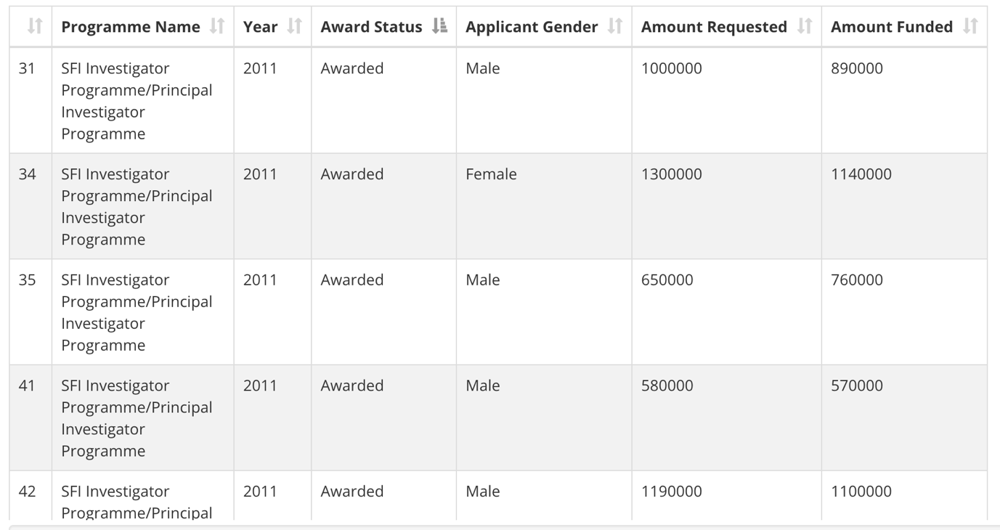
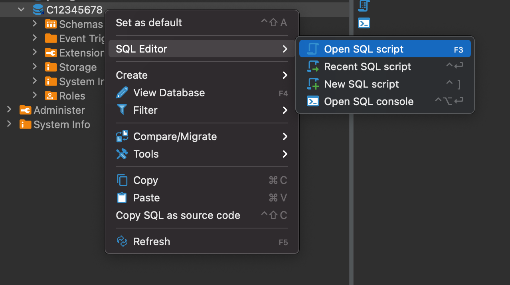

01 CMPU2007 Databases 1 – Lab 1
In this assignment, you will start practising your knowledge of SQL and relational databases on the lab computer:
- Open DBeaver and click on Database -> New Database Connection. Select the PostgreSQL elephant icon and click Next.
- In the Connection Settings, modify only the following settings:
- Host to 147.252.250.51
- Username to your student number (make sure the C or D component of your student number is a capital letter)
- Password to your student number (same rule: capitalise the C or D component)
02 Part A - Dataset analysis
The Science Foundation Ireland Gender Dashboard presents data on research award applications, considering the applicant’s gender and whether the research was funded or not. Download and analyse the dataset or take a look at a snapshot below:

Consider the content covered during class and try to sketch a table to represent this dataset. Think of:
- The table’s name
- The columns’ names
- The columns’ data types
- The primary key (you can create a new column if none of the existing ones suit)
03 Part B - Creating a table using SQL
Open DBeaver, find the database named with your student number. Right-click and select SQL Editor -> New SQL Script.

A window will open. Click on File -> Save as and save this file as lab1.sql. Modify lab1.sql to include the SQL code to create the table you sketched in part A. Make sure you drop the tables before creating them.
The PostgreSQL documentation can be helpful in this part of the assignment.
04 Part C – Running the code
To create the table, run the code by clicking on one of the three buttons:
to run the selected line of code

to run the selected line of code in a new tab
to run the entire script
05 Part D - Populating the table
Considering the data presented in the original SFI dataset, insert 5 (five) rows into the table you created.
If you want to make sure everything went well, add a “select * from [name of your table]” to the end of your code to display the resulting populated table.
06 Submitting and demonstrating your lab
- Submit the resulting SQL file to Brightspace.
- Demonstrate and run your code on DBeaver to the lab assistant.